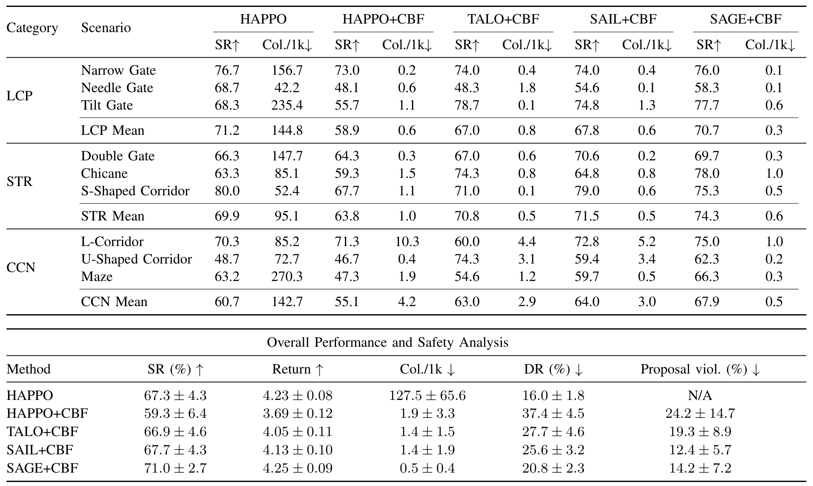

Experimental Results
Table 1: Comprehensive evaluation across nine three-carrier cooperative transport scenarios grouped into the LCP, STR, and CCN task families. The upper block reports mean success rate (SR, %) and collision steps per thousand environment steps (Col./1k) for each scenario and task family. The lower block summarizes overall task performance and safety behavior. Upper-block entries report means; lower-block entries report mean ± standard deviation.


Figure 7: Suite-level performance across LCP, STR, and CCN, with success rate (↑) above and collision steps per thousand environment steps (↓) below; the broken lower axis accommodates the much larger collision rate of unshielded HAPPO, and error bars denote standard deviation across evaluation runs.